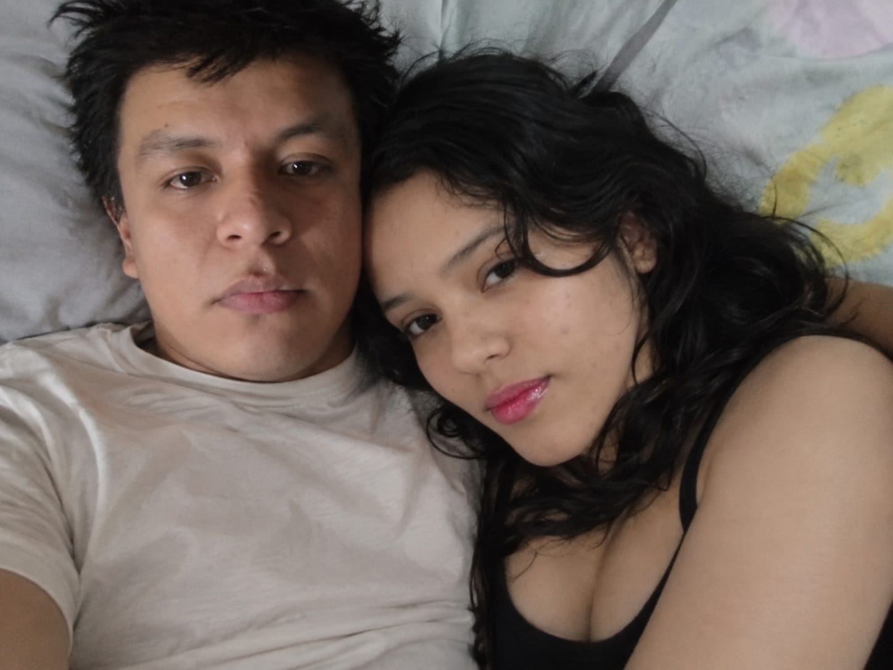
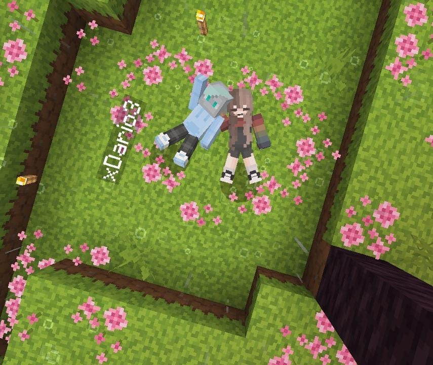
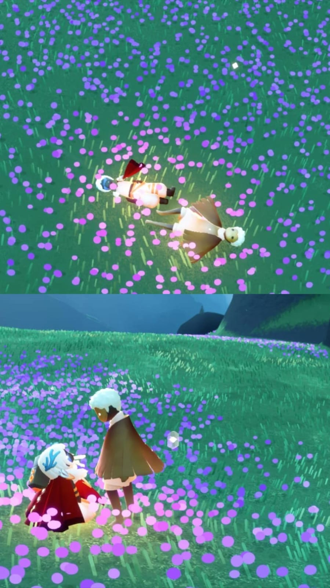
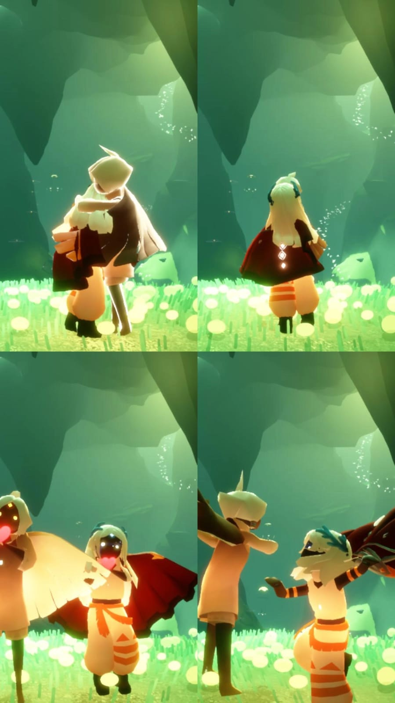
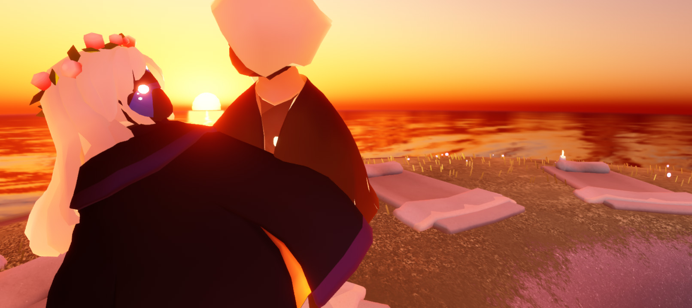
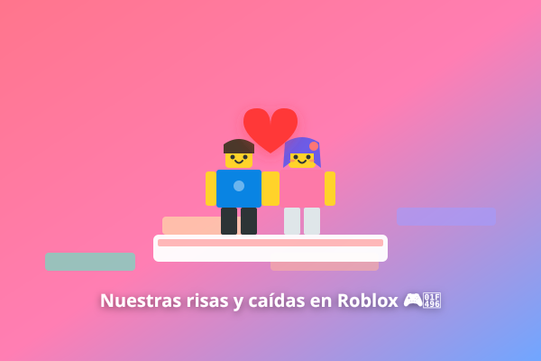

📌

Así nos imagino en la vida real
Acostaditos juntos, mirándonos a los ojos. Hice esta fotito con IA para plasmar cómo sueño tenerte así entre mis brazos cuando estemos juntitos. ¡Es mi mayor anhelo!
Sé que hoy estás trabajando con tu mami y que la distancia a veces pesa, pero mira todo lo que hemos construido juntos. En la vida real y en cada mundo virtual, ¡siempre estás tú en mi corazón! 💕
(Elige con sabiduría... el botón "No" es alérgico a que me digas que no 🥺)
Toca cualquier foto para verla en pantalla completa con todo su amor
Mira cómo nos imagino juntos y cómo nos acostamos en Minecraft y en Sky... ¡Siempre buscamos estar acostaditos, abrazarnos y descansar pegaditos en cualquier universo! 🥺💖

Acostaditos juntos, mirándonos a los ojos. Hice esta fotito con IA para plasmar cómo sueño tenerte así entre mis brazos cuando estemos juntitos. ¡Es mi mayor anhelo!

Tú y yo acostaditos en el pasto lleno de flores rosas, tú acostadita conmigo y tu skin hermosa. ¡Hasta en Minecraft descansamos juntitos!

Acostaditos mirando el cielo en esa alfombra de flores moradas. Y abajo, mirándonos con amor recargando nuestra luz interior.

Un abrazo en la cueva secreta, caminando juntitos, lanzándonos corazones en la carita y bailando con las alitas abiertas. ¡Pura ternura!

Mírate qué hermosa con tu corona de rositas rosadas, abrazándome mientras el sol se funde en el mar y las velas se encienden en la arena. No existe paisaje en ningún videojuego más lindo que estar a tu lado.
Elige tu juego favorito y activa los sonidos de nuestros recuerdos
Buscar flores, construir nuestra casita de madera, refugiarnos juntos cuando llueve y mirarnos con nuestros skins favoritos mientras comemos pastel en el juego. ¡Mi lugar favorito en cualquier servidor siempre es acostadito a tu ladito!
Agarrar tu manita para que no te pierdas, volar juntos por el reino dorado, recargarnos las alitas y sentarnos en los banquitos a hablar bajo las constelaciones. Cuando jugamos Sky, de verdad siento que vuelo contigo.

Cantar, caernos mil veces en el mismo nivel de parkour, esperar que el otro reviva, vestir a nuestros avatares haciendo match y no parar de reírnos por llamada. ¡Los momentos más graciosos de mi semana son contigo aquí!
Quedarnos dormiditos en llamada, ver películas compartiendo pantalla, enviarnos TikToks tontos y soñar con el día en que estemos acostaditos así de verdad, sin pantallas de por medio. ¡Te elijo a ti mil veces sobre cualquier distancia!
Gira la ruleta y dejemos que el destino elija nuestro plan para más tarde:
Tengo muchas ideas lindas preparadas para ti cuando descanses.
Guárdalas para cuando más lo necesites durante el día:
Mi amorcita preciosa, sé que trabajar cansa y a veces los días son pesados. Siéntete muy orgullosa de ti misma porque eres una mujer increíble, trabajadora y noble. Si pudiera, te llevaría ahora mismo tu comida favorita y te daría un masaje en la espalda. Respira profundo, ya falta poco para descansar. ¡Te amo con locura! 💆♀️💖
Yo también te estoy extrañando a cada segundo. Cada vez que sientas esa cosquillita en el pecho, recuerda que bajo este mismo cielo hay un chico loco de amor por ti contando las horas para verte en pantalla o abrazarte en persona. La distancia es solo temporal, lo nuestro es para siempre. 🌍✨
¡Ni se te ocurra dudar de ti! Eres brillante, hermosa, graciosa y tienes un corazón de oro. Admiro muchísimo cómo ayudas a tu mami y las ganas que le pones a todo. Para mí eres la chica más perfecta de este universo entero. ¡Nunca lo olvides reina! 🌟
Cierra tus ojitos sabiendo que hiciste un trabajo maravilloso hoy. Duerme calientita, sueña con nosotros en nuestro mundo de Minecraft o volando en Sky, y despiértate sabiendo que eres lo más bonito que me ha pasado en la vida. Te amo infinitamente. 🧸💤
Calculadora cuántica de amor a prueba de kilómetros:
¡Permiso oficial concedido! Cuando descanses de trabajar con tu mami y tengas tu tiempito libre, te llamo para escuchar tu vocecita hermosa.
"Mi reina hermosa, gracias por alegrarme la vida todos los días. Trabaja con calma y sin estrés, que aquí estaré esperando con ansias para hablar contigo y contarnos todo. ¡Te amo con todo mi corazón!"
Descripción tierna de la foto